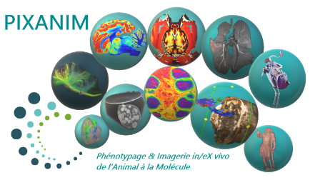

Un plateau d'imagerie dédié à la recherche préclinique
An imaging platform dedicated to preclinical research
Notre équipe dispose d'un accès privilégié à une plateforme d'imagerie médicale et à un pôle périchirurgie entièrement dédié à la recherche préclinique.
Our team has privileged access to a medical imaging platform and a peri-surgical unit entirely dedicated to preclinical research.

PIXANIM
Plateforme d'imagerie in vivo dédiée aux grands animaux, disposant d'un vaste plateau technique IRM.
In vivo imaging platform dedicated to large animals, with an extensive MRI technical facility.
Plateforme de phénotypage comportemental animal
Animal Behavioral Phenotyping Platform
L'unité expérimentale permettant la réalisation de suivis physiologiques et comportementaux, dans le respect du bien-être et de l'éthique en expérimentation animale.
The experimental unit for conducting physiological and behavioural monitoring, in full respect of welfare and the ethics of animal experimentation.
UMR Physiologie de la Reproduction et des Comportements
UMR Physiology of Reproduction and Behaviour
Notre unité mène des recherches fondamentales et appliquées dans trois grands champs disciplinaires : la biologie du comportement, la biologie systémique et la modélisation, et la biologie de la reproduction. Nous étudions de nombreux modèles animaux originaux, des espèces domestiques (bovins, ovins, caprins, équins, porcins et volailles) et des espèces modèles (rats, souris, cailles). Une collaboration avec le Muséum National d'Histoire Naturelle permet d'élargir les applications aux espèces sauvages. L'UMR PRC a la double mission de faire progresser la connaissance scientifique au niveau le plus fondamental et de répondre à des questions scientifiques suscitées par des enjeux de société en lien avec différents acteurs socio-économiques des filières de production animale et de santé humaine.
Our unit conducts fundamental and applied research across three major disciplinary fields: behavioural biology, systems biology and modelling, and reproductive biology. We study numerous original animal models, including domestic species (cattle, sheep, goats, horses, pigs and poultry) and model species (rats, mice, quail). A collaboration with the Muséum National d'Histoire Naturelle extends these applications to wild species. UMR PRC has the dual mission of advancing scientific knowledge at the most fundamental level and addressing scientific questions raised by societal challenges, in connection with various socio-economic stakeholders in animal production and human health.